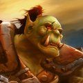

Récits Légendes de Kirin Tor Personnages Célébrités Guildes
Outils Calendrier Calendrier Illustré Mod d'interface
Informations Historiens FAQ Liens Crédits
Les légendes de Kirin Tor
Talin
Mail : ==> Afficher les personnages de Talin
Gaark
 Age : 18
Age : 18
Sexe : Homme
Race : Orc
Faction : Horde
Formation : Guerrier
Description : Je suis né le neuvième jour de la Chouette parmi le clan Warsong durant des temps sombres pour notre peuple. Mon enfance fut bercée par les récits les légendes du passer de la Horde et de mon Clan. Au temps des réserves de l'Alliance. Mon clan garda sa liberté mais ce fut au pris d'un exode constant et de nombreux combats. Mon grand père, second d'un général tombé au combat, était au courant des moindres mouvements du Clan, alors que mon père était un guerrier émérite, présent à chaque bataille. Grand père avait un don pour les contes. Il passait de longues heures à m'émerveiller des chroniques du Clan, magnifiées au plus haut point. Il avait du génie pour faire ressortir l'honneur, la gloire et le courage dont faisait preuve les guerriers lors de la plus insignifiante escarmouche. Etant encore jeune, je restais en arrière avec mon grand père. Je vis donc par ses récit la rage sanguinaire s'emparer de mon clan et lui redonner sa puissance destructrice d'entant. Et de nouvelles légendes prirent vie sous mes yeux.
Puis le choc terrible entre les Warsong et les fidèles de Thrall eu lieu. Mon Clan fut presque anéantit mais notre sauveur Grom Hellscream par son sacrifice libéra notre peuple du démon Ce n'est que plus tard que j'appris que Thrall suivait alors la voie du salut et que mes frères étaient manipulés par les puissances des ténèbres. Thrall dans sa grande bonté m'accueilli les bras ouvert malgré les conflits passé entre nos Clans. Je m'installais donc à Ogrimmar la puissante. Ces dernières années je continuais à écouter les récits des événements qui changèrent si radicalement notre peuple. Ma joie fut grande le jour on je pus prendre les armes pour défendre mon peuple. Je pourrais enfin rendre hommage à la sagesse de Thrall notre guide et d'Hellscream notre sauveur. Espérant à mon tour donner vie à des contes qui émerveilleraient les coeurs des générations futures comme le mien fut guidé par ces légendes.
Plus d'infos sur Gaark >>>
Lire les 6 récits de Gaark >>>
Aubedunst
Sexe : FemmeRace : Mort-vivant
Faction : Horde
Formation : Prêtre
Description : Je me nomme Aube Dunst. Il y a quelques années j'étais une combattante de l'église, suivante de Jaina Proudmoore. C'est auprès d'elle que j'ai étudié vos peuples et votre langage. Mais lors de la Grande Guerre je suis tombée, et le Fléau m'a emporté. C'est la Dame Sylvanas qui m'a sauvé, ou du moins m'a rendu ma conscience. Très vite je me suis rendu compte que ma condition me permettait une chose étrange. Je peux ressentir les douleurs d'autrui et ainsi l'en préserver. Tant que la mort ne me m'accueillera pas je l'empêcherais de prendre d'autres âmes. Voyant la déchéance de l'Humanité je me tourne vers vous car j'ai vu que vos Chefs sont nobles.
Plus d'infos sur Aubedunst >>>
Lire le récit de Aubedunst >>>